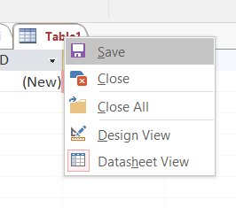
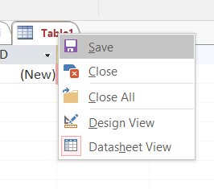
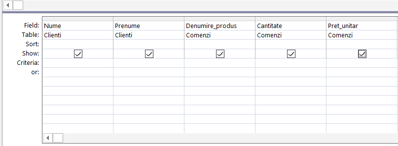

F I Ş A Nr. 3
Crearea unei interogări
Interogările reprezintă obiectele prin care se extrag informaţii dintr-o bază de date. O interogare acţionează fie asupra unui tabel, fie asupra mai multor tabele corelate prin relaţii.
Câteva dintre cele mai importante caracteristici ale unei interogări sunt:
- Tabelele şi relaţiile care stau la baza unei interogări reprezintă subschema interogării.
- Extragerea de informaţii din interogări se face prin operaţii de algebră relaţională pe mulţimi.
O interogare (query) este o definiţie a datelor care se extrag: care câmpuri, din care tabele, criteriile de selecţie, ordinea de sortare. Structura unei interogări indică datele care se vor extrage
Creăm o nouă bază de date goală :

pe care o denumim

Baza de date va conţine un tabel
| Câmpul ID_Client este cheie primară |
 pe care il salvăm  cu numele
pe care il salvăm  cu numele | Câmpul ID_Comanda este cheie primară |

| Câmpul ID_Client din tabelul |
Avem două tabele:
Una dintre cele mai puternice operaţii în
Din ribbon-ul Create alegeţi
Selectăm
Selectăm câmpurile care dorim să apară in interogare şi apoi click pe Next:
Dăm numele

Obţinem următoarea interogare:
Pentru a crea o interogare pentru tabelul
Obţinem următoarea interogare:
Pentru a crea o interogare care să conţină câmpuri din ambele tabele din ribbon-ul Create alegeţi
Selectăm ambele tabele şi apăsăm Add, apoi Close.
Selectăm din ambele tabele câmpurile care dorim sa apară in interogare:
Dupa ce am selectat câmpurile dorite:

Apăsăm , din ribbon-ul contextual Design şi obţinem:
Se salvează interogarea dând click dreapta:
şi i se dă un nume:
La final baza de date va avea următoarea structură: